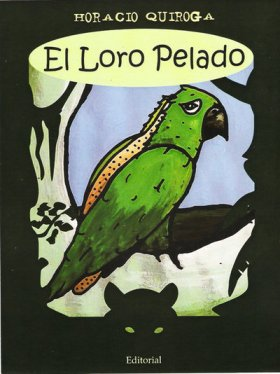

|  |
El Loro Pelado(Cuentos de la selva 1998)Había una vez una banda de loros que vivía en el monte.
De mañana temprano iban a comer choclos a la chacra, y de tarde comían naranjas. Hacían gran barullo con sus gritos, y tenían siempre un loro de centinela en los árboles más altos, para ver si venía alguien.
Los loros son tan dañinos como la langosta, porque abren los choclos para picotearlos, los cuales, después, se pudren con la lluvia. Y como al mismo tiempo los loros son ricos para comer guisados, los peones los cazaban a tiros.
Un día un hombre bajó de un tiro a un loro centinela, el que cayó herido y peleó un buen rato antes de dejarse agarrar. El peón lo llevó a la casa, para los hijos del patrón, y los chicos lo curaron porque no tenía más que un ala rota. El loro se curó muy bien, y se amansó completamente. Se llamaba Pedrito. Aprendió a dar la pata; le gustaba estar en el hombro de las personas y con el pico les hacía cosquillas en la oreja.
Vivía suelto y pasaba casi todo el día en los naranjos y eucaliptos del jardín. Le gustaba también burlarse de las gallinas. A las cuatro o cinco de la tarde, que era la hora en que tomaban el té en la casa,el loro entraba también en el comedor, y se subía con el pico y laspatas por el mantel, a comer pan mojado en leche. Tenía locurapor el té con leche.
Tanto se daba Pedrito con los chicos y tantas cosas le decían lascriaturas, que el loro aprendió a hablar. Decía: «¡Buen día, lorito!…»«¡Rica la papa!…» «¡Papa para Pedrito!…» Decía otras cosas másque no se pueden decir, porque los loros, como los chicos, aprendencon gran facilidad malas palabras.
Cuando llovía. Pedrito se encrespaba y se contaba a sí mismo unaporción de cosas, muy bajito. Cuando el tiempo se componía,volaba entonces gritando como un loco.
Era, como se ve, un loro bien feliz, que además de ser libre, comolo desean todos los pájaros, tenía también, como las personas ricas,su five o’clock tea.
Ahora bien: en medio de esta felicidad, sucedió que una tarde delluvia salió por fin el sol después de cinco días de temporal, yPedrito se puso a volar gritando:
-¡Que lindo día, lorito!… ¡Rica, papa!… ¡La pata, Pedrito! – y novolaba lejos, hasta que vio debajo de él, muy abajo, el río Paraná,que parecía una lejana y ancha cinta blanca. Y siguió, siguióvolando, hasta que se asentó por fin en un árbol a descansar. |